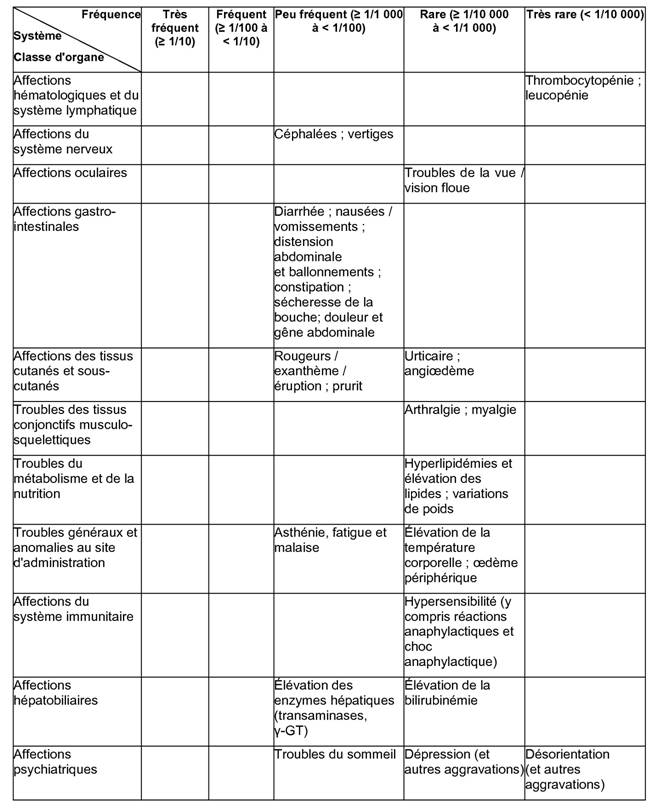

RÉSUMÉ DES CARACTÉRISTIQUES DU PRODUIT
ANSM - Mis à jour le : 24/12/2009
PANTONYCOMED 40 mg, comprimé gastro-résistant
2. COMPOSITION QUALITATIVE ET QUANTITATIVE
Pantoprazole ..................................................................................................................................... 40 mg
équivalent à 45,10 mg de pantoprazole sodique sesquihydraté.
Pour un comprimé gastro-résistant.
Excipient: lécithine de soja
Pour la liste complète des excipients, voir rubrique 6.1.
Comprimé gastro-résistant.
Comprimé enrobé jaune, ovale et biconvexe, portant sur une face « P40 » imprimé à l'encre brune.
4.1. Indications thérapeutiques
· Œsophagite par reflux gastro-oesophagien modérée et sévère.
· En association à une bithérapie antibiotique, éradication de Helicobacter pylori en cas de maladie ulcéreuse gastro-duodénale.
· Ulcère duodénal.
· Ulcère gastrique.
· Syndrome de Zollinger-Ellison et autres conditions pathologiques hypersécrétoires.
4.2. Posologie et mode d'administration
PANTONYCOMED 40 mg, comprimé gastro-résistant ne doit pas être croqué ni écrasé, mais avalé entier avec un peu d'eau avant un repas.
Posologie recommandée:
Adultes et adolescents à partir de 12 ans:
Traitement de l'œsophagite par reflux gastro-oesophagien modérée et sévère
Un comprimé de PANTONYCOMED 40 mg par jour. Dans certains cas, la dose peut être doublée (en passant à 2 comprimés de PANTONYCOMED 40 mg par jour), notamment lorsqu'il n'y a pas eu de réponse à un autre traitement. Une durée de traitement de 4 semaines est habituellement nécessaire pour la cicatrisation des lésions d'œsophagite associée. Si cette durée n'est pas suffisante, la guérison sera obtenue en général par un traitement de 4 semaines supplémentaires.
Adultes:
Eradication de Helicobacter pylori par bithérapie antibiotique
Chez les patients atteints d'ulcères gastriques et duodénaux positifs pour Helicobacter pylori, l'éradication du germe nécessite de recourir à une thérapie combinée. En fonction du schéma de résistance, les combinaisons suivantes peuvent être recommandées pour l'éradication de H. pylori:
a) un comprimé de PANTONYCOMED 40 mg deux fois par jour:
· + 1000 mg d'amoxicilline deux fois par jour
· + 500 mg de clarithromycine deux fois par jour
b) un comprimé de PANTONYCOMED 40 mg deux fois par jour
· + 400 à 500 mg de métronidazole deux fois par jour
· + 250 à 500 mg de clarithromycine deux fois par jour
c) un comprimé de PANTONYCOMED 40 mg deux fois par jour
· + 1000 mg d'amoxicilline deux fois par jour
· + 400 à 500 mg de métronidazole deux fois par jour
En bithérapie, pour l'éradication d'une infection à Helicobacter pylori, le deuxième comprimé de PANTONYCOMED 40 mg doit être pris avant le repas du soir. La bithérapie est en général mise en œuvre pour une durée de 7 jours et peut être prolongée jusqu'à un maximum de deux semaines. Si la poursuite du traitement par le pantoprazole est indiquée pour assurer la guérison des ulcères, les doses recommandées pour les ulcères duodénaux et gastriques doivent être prises en compte.
Il doit être tenu compte des directives officielles locales (par exemple des recommandations nationales) concernant la résistance bactérienne ainsi que le bon usage et la prescription des agents antibactériens.
Si la bithérapie n'est pas indiquée, par exemple si le patient s'est révélé négatif pour Helicobacter pylori, les consignes de dosage suivantes s'appliquent à la monothérapie avec PANTONYCOMED 40 mg:
Traitement des ulcères gastriques
Un comprimé de PANTONYCOMED 40 mg par jour. Dans certains cas, la dose peut être doublée (en passant à 2 comprimés de PANTONYCOMED 40 mg par jour), notamment lorsqu'il n'y a pas eu de réponse à un autre traitement. Une durée de traitement de 4 semaines est habituellement nécessaire pour la cicatrisation des ulcères gastriques. Si cette durée n'est pas suffisante, la guérison sera obtenue en général par un traitement de 4 semaines supplémentaires.
Traitement des ulcères duodénaux
Un comprimé de PANTONYCOMED 40 mg par jour. Dans certains cas, la dose peut être doublée (en passant à 2 comprimés de PANTONYCOMED 40 mg par jour), notamment lorsqu'il n'y a pas eu de réponse à un autre traitement. Une durée de traitement de 2 semaines est habituellement nécessaire pour la cicatrisation d'un ulcère duodénal. Si cette durée n'est pas suffisante, la guérison sera obtenue en général par un traitement de 2 semaines supplémentaires.
Syndrome de Zollinger-Ellison et autres conditions pathologiques hypersécrétoires
Pour le traitement au long cours du syndrome de Zollinger-Ellison et d'autres conditions pathologiques hypersécrétoires, la posologie initiale est de 80 mg (2 comprimés de PANTONYCOMED 40 mg). Celle-ci peut être augmentée ou diminuée en fonction des besoins, selon les résultats des mesures du débit acide. Dans le cas d'une posologie supérieure à 80 mg par jour, la dose sera fractionnée en deux prises. Une augmentation temporaire de la posologie au-dessus de 160 mg par jour est possible mais ne devrait pas excéder la durée nécessaire à la maîtrise de la sécrétion acide.
La durée du traitement du syndrome de Zollinger-Ellison et des autres conditions pathologiques hypersécrétoires n'est pas limitée et doit être adaptée en fonction des besoins cliniques.
Enfants âgés de moins de 12 ans:
Les données disponibles étant limitées dans cette tranche d'âge, PANTONYCOMED 40 mg ne doit pas être administré à l'enfant de moins de 12 ans.
Populations particulières:
Chez l'insuffisant hépatique sévère, la dose doit être réduite à 1 comprimé (40 mg de pantoprazole) tous les deux jours. Un bilan des enzymes hépatiques devra être réalisé régulièrement pendant le traitement notamment en cas de traitement au long cours. En cas d'élévation de celles-ci, le traitement devra être interrompu. Voir également rubrique 4.3 et rubrique 4.4.
Ne pas dépasser une dose journalière de 40 mg de pantoprazole chez l'insuffisant rénal. Voir également rubrique 4.3 et rubrique 4.4. Excepté dans le cadre de l'éradication de H. pylori par bithérapie, où même les sujets âgés doivent recevoir la dose habituelle de pantoprazole (2x40 mg/jour) pendant une durée de traitement d'une semaine.
Hypersensibilité à la substance active, au soja ou à l'un des autres excipients de PANTONYCOMED 40 mg.
Les données de sécurité et d'efficacité disponibles étant limitées, PANTONYCOMED 40 mg ne doit pas être utilisé en bithérapie pour l'éradication de H. pylori chez les patients présentant une insuffisance hépatique ou rénale modérée à sévère.
Comme les autres inhibiteurs de la pompe à protons (IPP), le pantoprazole ne doit pas être administré de manière concomitante avec l'atazanavir (voir rubrique 4.5).
4.4. Mises en garde spéciales et précautions d'emploi
Les patients présentant une insuffisance hépatique sévère doivent recevoir 40 mg de pantoprazole tous les deux jours. Un bilan des enzymes hépatiques devra être réalisé régulièrement pendant le traitement notamment en cas de traitement au long cours. En cas d'élévation de celles-ci, le traitement devra être interrompu (voir rubrique 4.2 et rubrique 4.3).
En cas de bithérapie, les résumés des caractéristiques du produit des substances médicamenteuses respectives doivent être respectés.
En présence de tout symptôme alarmant (par exemple perte de poids involontaire significative, vomissements récurrents, dysphagie, hématémèse, anémie ou méléna) et, lorsqu'un ulcère gastrique est suspecté ou présent, une affection maligne doit être écartée car la prise de pantoprazole peut masquer les symptômes et par conséquent en retarder le diagnostic.
D'autres examens doivent être envisagés si les symptômes persistent malgré un traitement adéquat.
Chez les patients atteints du syndrome de Zollinger-Ellison et d'autres conditions pathologiques hypersécrétoires nécessitant un traitement au long cours, le pantoprazole, Comme les autres anti-sécrétoires, le pantoprazole peut diminuer l'absorption de la vitamine B12 (cyanocobalamine) par hypo- ou achlorhydrie. Ce risque devrait être envisagé chez les patients disposant de réserves réduites ou présentant des facteurs de risque de diminution de l'absorption de la vitamine B12, lors de traitements au long cours.
Comme tous les inhibiteurs de la pompe à protons, le pantoprazole est susceptible d'augmenter le nombre des bactéries normalement présentes dans le tractus gastro-intestinal supérieur. Le traitement avec PANTONYCOMED 40 mg peut conduire à une légère augmentation du risque d'infections gastro-intestinales provoquées par des bactéries (par exemple Salmonella, Campylobacter et C. difficile).
4.5. Interactions avec d'autres médicaments et autres formes d'interactions
Le pantoprazole 40 mg peut modifier l'absorption des médicaments dont la biodisponibilité est pH-dépendante (par exemple le kétoconazole).
L'administration concomitante d'atazanavir 300 mg/ritonavir 100 mg et d'oméprazole (40 mg une fois par jour) ou d'atazanavir 400 mg et de lansoprazole (dose unique de 60 mg) chez des volontaires sains a entraîné une réduction substantielle de la biodisponibilité de l'atazanavir. L'absorption de l'atazanavir est pH-dépendante, par conséquent le pantoprazole ne doit pas être administré avec l'atazanavir (voir rubrique 4.3).
Le pantoprazole est métabolisé au niveau du foie, par le système enzymatique du cytochrome P450. Une interaction avec une autre substance métabolisée par ce même système enzymatique ne peut être exclue. Cependant, aucune interaction cliniquement significative n'a été observée au cours d'études spécifiques portant notamment sur la carbamazépine, la caféine, le diazépam, le diclofénac, la digoxine, l'éthanol, le glibenclamide, le métoprolol, le naproxène, la nifédipine, la phénytoïne, le piroxicam, la théophylline et un contraceptif oral.
Bien qu'aucune interaction n'ait été observée lors de l'administration concomitante de phenprocoumone ou de warfarine, au cours des études de pharmacocinétique clinique, quelques cas isolés de modification de l'INR ont été rapportés, lors de l'administration simultanée, après la mise sur le marché. En conséquence, chez les patients traités par des anticoagulants coumariniques, le suivi du taux de l'INR/taux de prothrombine est recommandé au début et à l'arrêt du traitement, ou en cas d'administration intermittente de pantoprazole.
Il n'existe pas d'interactions avec les antiacides administrés de manière concomitante.
Des études d'interactions cinétiques chez l'homme ont été réalisées en administrant le pantoprazole de manière concomitante avec différents antibiotiques (clarithromycine, métronidazole, amoxicilline). Aucune interaction cliniquement significative n'a été observée.
Il n'y a que très peu de données concernant l'utilisation du pantoprazole chez la femme enceinte. Au cours des études de reproduction chez l'animal, des signes de foetotoxicité ont été observés (voir rubrique 5.3). Le risque potentiel chez l'homme n'est pas connu.
PANTONYCOMED 40 mg ne doit être utilisé au cours de la grossesse qu'en cas de réelle nécessité.
Il n'y a aucune donnée sur le passage du pantoprazole dans le lait humain. Des études menées chez l'animal ont montré que le pantoprazole passait dans le lait maternel. La décision de poursuivre/arrêter l'allaitement ou celle de poursuivre/arrêter le traitement par PANTONYCOMED 40 mg doit être prise en tenant compte du bénéfice de l'allaitement pour l'enfant et du bénéfice du traitement par PANTONYCOMED 40 mg pour la mère.
4.7. Effets sur l'aptitude à conduire des véhicules et à utiliser des machines
PANTONYCOMED 40 mg n'a pas d'effet connu sur l'aptitude à conduire des véhicules et à utiliser des machines. Des effets indésirables tels que sensations vertigineuses et /ou troubles visuels peuvent survenir (voir rubrique 4.8).Dans ces conditions, la capacité de réaction peut être diminuée.
Les effets indésirables suivants ont été rapportés au cours des études cliniques avec le pantoprazole.
Dans chaque groupe de fréquence, les effets indésirables sont présentés par ordre de gravité décroissant.

Les autres effets indésirables suivants ont été notifiés après commercialisation:
Affections hépatobiliaires: lésion hépatocellulaire, ictère, insuffisance hépatocellulaire.
Affections psychiatriques: hallucinations, confusion (notamment chez les patients prédisposés, ainsi que l'aggravation de ces symptômes lorsqu'ils sont préexistants).
Affections du rein et des voies urinaires: néphrite interstitielle.
Affections de la peau et du tissu sous-cutané: syndrome de Stevens-Johnson, syndrome de Lyell; érythème polymorphe, photosensibilité.
Les symptômes du surdosage chez l'homme ne sont pas connus.
Des doses atteignant 240 mg administrées par voie injectable en deux minutes ont été bien tolérées. Comme le pantoprazole est largement lié aux protéines, il n'est pas dialysable.
Les cas de surdosage ou d'intoxication seront traités conformément à la pratique standard de traitement des états toxiques.
5. PROPRIETES PHARMACOLOGIQUES
5.1. Propriétés pharmacodynamiques
Classe pharmacothérapeutique: INHIBITEURS DE LA POMPE A PROTONS, Code ATC: A02BC02.
Le pantoprazole est un benzimidazole substitué, qui inhibe la sécrétion d'acide chlorhydrique dans l'estomac, par action spécifique sur les pompes à protons des cellules pariétales.
Le pantoprazole est converti dans sa forme active dans le canal acide des cellules pariétales où il inhibe l'enzyme H+, K+-ATPase, c'est-à-dire au niveau de la phase terminale de sécrétion d'acide chlorhydrique dans l'estomac. L'inhibition est dose-dépendante et affecte à la fois la sécrétion acide basale et la sécrétion acide stimulée. Chez la plupart des patients, les symptômes disparaissent en deux semaines. Comme avec les autres inhibiteurs de la pompe à protons et les inhibiteurs des récepteurs H2, le traitement avec le pantoprazole entraine une réduction de l'acidité de l'estomac et donc une augmentation de la gastrine proportionnelle à la diminution de l'acidité. Cette augmentation de la gastrine est réversible. Puisque le pantoprazole se lie à l'enzyme située postérieurement au niveau des récepteurs cellulaires, il peut inhiber la sécrétion acide gastrique, quelle que soit la nature du stimulus (acétylcholine, histamine, gastrine). L'effet est le même, que le produit soit administré oralement ou par voie intraveineuse.
5.2. Propriétés pharmacocinétiques
Pharmacocinétique générale
Le pantoprazole est rapidement absorbé et la concentration plasmatique maximale est atteinte dès la première dose orale de 40 mg. Les concentrations plasmatiques maximales sont atteintes en moyenne après 2,5 heures et elles sont de l'ordre de 2 - 3 µg/ml; ces valeurs restent constantes après administrations répétées. Le volume de distribution est d'environ 0,15 l/kg et la clairance de 0,1 l/h/kg. La demi-vie d'élimination est d'environ 1h. Il a été noté quelques cas isolés de sujets chez lesquels l'élimination est retardée. Le pantoprazole se fixant spécifiquement aux pompes à protons des cellules pariétales gastriques, sa demi-vie d'élimination ne rend pas compte de sa durée d'action plus prolongée (inhibition de la sécrétion acide).
La pharmacocinétique ne varie pas après doses uniques ou répétées. Pour des doses allant de 10 à 80 mg, la cinétique plasmatique du pantoprazole est linéaire après administration orale et intraveineuse.
La liaison aux protéines plasmatiques est de 98% environ. Le pantoprazole est presque exclusivement métabolisé par le foie. L'élimination rénale est la voie principale d'excrétion des métabolites (environ 80%), le reste étant éliminé dans les fèces. Le principal métabolite retrouvé à la fois dans le sérum et les urines est le déméthylpantoprazole, sous la forme d'un sulfoconjugué. Sa demi-vie d'élimination (environ 1,5 h) n'est pas supérieure à celle du pantoprazole.
Biodisponibilité
Le pantoprazole est totalement absorbé après administration orale. La biodisponibilité absolue des comprimés est de 77%. La prise concomitante de nourriture n'affecte pas l'ASC ni la concentration sérique maximale, et donc la biodisponibilité. Seule la variabilité du délai d'absorption est augmentée par les repas.
Caractéristiques chez les patients/populations particulières
Aucune diminution de la dose n'est nécessaire chez les insuffisants rénaux (par exemple les patients dialysés). Comme chez le sujet sain, la demi-vie d'élimination est courte. Seules de très faibles quantités de pantoprazole sont dialysées. Bien que le principal métabolite ait une demi-vie légèrement allongée (2-3 h), l'excrétion reste rapide et aucune accumulation n'est donc observée.
Chez le cirrhotique (classes A et B de Child), malgré l'allongement de la demi-vie jusqu'à 7 à 9 h et l'augmentation de l'ASC d'un facteur 5 à 7, la concentration sérique maximale n'est que légèrement augmentée (x 1,5) comparativement au sujet sain.
La légère augmentation de l'ASC et de la Cmax observée chez le sujet âgé comparativement au sujet jeune n'a aucune incidence clinique.
Enfants
Après administration orale d'une dose unique de 20 ou 40 mg de pantoprazole à des enfants âgés de 5 à 16 ans, les valeurs de l'ASC et de la Cmax se sont révélées similaires à celles observées chez l'adulte.
Après administration IV unique d'une dose de 0,8 ou 1,6 mg/kg de pantoprazole à des enfants âgés de 2 à 16 ans, il n'a pas été observé de corrélation significative entre la clairance et l'âge ou le poids. L'ASC et le volume de distribution étaient conformes aux données observées chez l'adulte.
5.3. Données de sécurité préclinique
Les données précliniques ne mettent en évidence aucun risque particulier chez l'homme, au vu des essais pharmacologiques de sécurité, de toxicité par administrations réitérées et de génotoxicité.
Au cours des études de carcinogénicité sur 2 ans chez le rat (correspondant à un traitement à vie) sont apparues des néoplasies neuro-endocriniennes. De plus, des papillomes des cellules squameuses sont apparus dans l'estomac antérieur du rat dans une étude. Le mécanisme entraînant la formation de carcinoïdes gastriques par les benzimidazoles substitués a été étudié de façon approfondie et l'on peut conclure qu'il s'agit d'une réaction secondaire à l'élévation massive de la gastrinémie chez le rat au cours des études à long terme portant sur de fortes doses.
Durant les études sur 2 ans chez le rongeur, une augmentation du nombre des tumeurs hépatiques a été observée chez le rat (au cours d'une seule étude) et les souris femelles, et a été considérée comme due à un métabolisme hépatique important.
Une légère augmentation des transformations néoplasiques de la thyroïde a été notée dans le groupe de rats recevant la plus forte dose (200 mg/kg) au cours d'une étude sur 2 ans. L'apparition de ces néoplasies est associée aux modifications induites par le pantoprazole dans la dégradation de la thyroxine au niveau hépatique chez le rat. La dose thérapeutique chez l'homme étant faible, aucun effet sur la glande thyroïde n'est attendu.
Au cours des études de reproduction chez l'animal, des signes discrets de fœtotoxicité ont été observés pour des doses supérieures à 5 mg/kg.
Le passage transplacentaire a été étudié chez le rat et s'avère aller en augmentant avec l'avancement de la gestation. En conséquence, la concentration du pantoprazole chez le fœtus est brièvement augmentée avant la naissance.
Carbonate de sodium anhydre, mannitol, crospovidone, povidone K90, stéarate de calcium.
Enrobage:
Hypromellose, povidone K25, dioxyde de titane (E171), oxyde de fer jaune (E172), propylène glycol, copolymère d'acide méthacrylique et d'acrylate d'éthyle (1:1), polysorbate 80, laurylsulfate de sodium, citrate de triéthyle, encre d'impression brune*.
*Encre d'impression brune: Gomme laque, oxyde de fer rouge, noir et jaune (E172), lécithine de soja, dioxyde de titane (E171), émulsion de diméticone.
Sans objet.
3 ans.
Durée de conservation des flacons en PEHD après la première ouverture: 2 mois
6.4. Précautions particulières de conservation
Pas de précautions particulières de conservation.
6.5. Nature et contenu de l'emballage extérieur
Comprimés gastro-résistant.
Flacon (PEHD) avec bouchon à vis (PEBD), plaquettes thermoformées (Aluminium/Aluminium) avec suremballage cartonné ou plaquettes thermoformées (Aluminium/Aluminium) sans suremballage cartonné de 7, 10, 14, 15, 24, 28, 30, 48, 50, 56, 60, 84, 90, 98, 100, 112, 140, 140 (10x14), 168 ou 700 (5x140).
Toutes les présentations peuvent ne pas être commercialisées.
6.6. Précautions particulières d’élimination et de manipulation
Pas d'exigences particulières.
Les produits inutilisés ou les déchets doivent être éliminés conformément à la règlementation en vigueur localement.
7. TITULAIRE DE L’AUTORISATION DE MISE SUR LE MARCHE
NYCOMED GMBH
BYK-GULDEN STR.2
78467 KONSTANZ
ALLEMAGNE
8. NUMERO(S) D’AUTORISATION DE MISE SUR LE MARCHE
· 397 801-9 ou 34009 397 801 9 1: 7 comprimés gastro-résistants en flacon (PEHD) avec bouchon à vis (PEBD).
· 397 802-5 ou 34009 397 802 5 2: 10 comprimés gastro-résistants en flacon (PEHD) avec bouchon à vis (PEBD).
· 397 803-1 ou 34009 397 803 1 3: 14 comprimés gastro-résistants en flacon (PEHD) avec bouchon à vis (PEBD).
· 397 804-8 ou 34009 397 804 8 1: 15 comprimés gastro-résistants en flacon (PEHD) avec bouchon à vis (PEBD)
· 397 805-4 ou 34009 397 805 4 2: 24 comprimés gastro-résistants en flacon (PEHD) avec bouchon à vis (PEBD).
· 397 806-0 ou 34009 397 806 0 3: 28 comprimés gastro-résistants en flacon (PEHD) avec bouchon à vis (PEBD).
· 397 807-7 ou 34009 397 807 7 1: 30 comprimés gastro-résistants en flacon (PEHD) avec bouchon à vis (PEBD).
· 397 808-3 ou 34009 397 808 3 2: 48 comprimés gastro-résistants en flacon (PEHD) avec bouchon à vis (PEBD).
· 397 810-8 ou 34009 397 810 8 2: 56 comprimés gastro-résistants en flacon (PEHD) avec bouchon à vis (PEBD).
· 397 811-4 ou 34009 397 811 4 3: 60 comprimés gastro-résistants en flacon (PEHD) avec bouchon à vis (PEBD).
· 397 812-0 ou 34009 397 812 0 4: 84 comprimés gastro-résistants en flacon (PEHD) avec bouchon à vis (PEBD).
· 397 813-7 ou 34009 397 813 7 2: 90 comprimés gastro-résistants en flacon (PEHD) avec bouchon à vis (PEBD).
· 397 814-3 ou 34009 397 814 3 3: 98 comprimés gastro-résistants en flacon (PEHD) avec bouchon à vis (PEBD).
· 397 816-6 ou 34009 397 816 6 2: 100 comprimés gastro-résistants en flacon (PEHD) avec bouchon à vis (PEBD).
· 397 817-2 ou 34009 397 817 2 3: 112 comprimés gastro-résistants en flacon (PEHD) avec bouchon à vis (PEBD).
· 397 818-9 ou 34009 397 818 9 1: 168 comprimés gastro-résistants en flacon (PEHD) avec bouchon à vis (PEBD).
· 397 819-5 ou 34009 397 819 5 2: 5 comprimés gastro-résistants sous plaquettes thermoformées (Aluminium/Aluminium) avec suremballage cartonné.
· 397 820-3 ou 34009 397 820 3 4: 7 comprimés gastro-résistants sous plaquettes thermoformées (Aluminium/Aluminium) avec suremballage cartonné.
· 397 822-6 ou 34009 397 822 6 3: 5 comprimés gastro-résistants sous plaquettes thermoformées (Aluminium/Aluminium) sans suremballage cartonné.
· 397 823-2 ou 34009 397 823 2 4: 7 comprimés gastro-résistants sous plaquettes thermoformées (Aluminium/Aluminium) sans suremballage cartonné.
· 576 095-1 ou 34009 576 095 1 1: 50 comprimés gastro-résistants en flacon (PEHD) avec bouchon à vis (PEBD).
· 576 096-8 ou 34009 576 096 8 9: 90 comprimés gastro-résistants en flacon (PEHD) avec bouchon à vis (PEBD).
· 576 097-4 ou 34009 576 097 4 0: 100 comprimés gastro-résistants en flacon (PEHD) avec bouchon à vis (PEBD).
· 576 098-0 ou 34009 576 098 0 1: 140 comprimés gastro-résistants en flacon (PEHD) avec bouchon à vis (PEBD).
· 576 099-7 ou 34009 576 099 7 9: 140 (10x14) comprimés gastro-résistants en flacon (PEHD) avec bouchon à vis (PEBD).
· 576 100-5 ou 34009 576 100 5 0: 700 (5x140) comprimés gastro-résistants en flacon (PEHD) avec bouchon à vis (PEBD).
9. DATE DE PREMIERE AUTORISATION/DE RENOUVELLEMENT DE L’AUTORISATION
[à compléter par le titulaire]
10. DATE DE MISE A JOUR DU TEXTE
[à compléter par le titulaire]
Sans objet.
12. INSTRUCTIONS POUR LA PREPARATION DES RADIOPHARMACEUTIQUES
Sans objet.
Liste II.